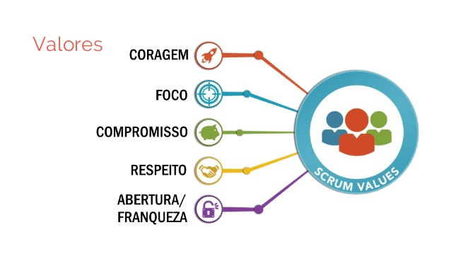
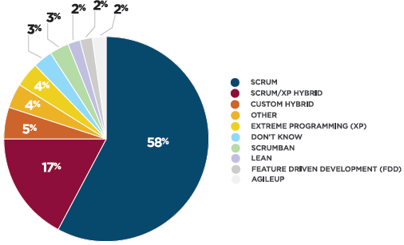
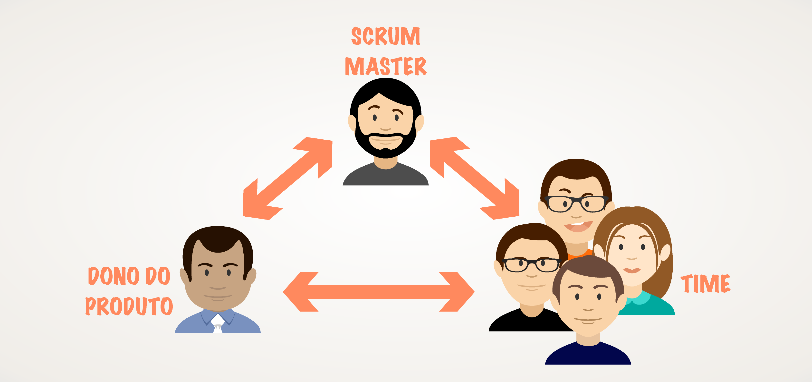
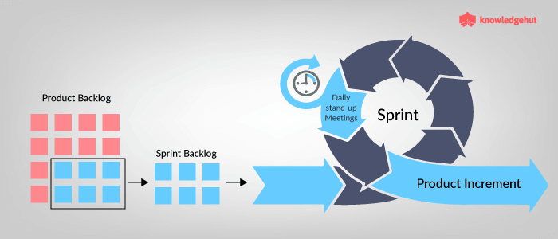

Clique sobre a tela para avançar no conteudo
Progresso de Aprendizado
Scrum

O Scrum é uma metodologia de adaptação, iteratividade, rapidez,
flexibilidade e eficiência, projetada para fornecer um valor
significativo durante todo o projeto e tem alguns valores que a rodeiam
como mostra a imagem acima.

O Scrum é amplamente usado, principalmente para desenvolver software, hardware, software, mas ele também pode ser usada
varios tipos de ramos de trabalho como:embarcado, redes de funções interativas, veículos autônomos, escolas,
governo, marketing, gerenciamento da operação de organizações e quase
tudo o que usamos em nossas vidas diárias, como indivíduos e sociedades..

Assim como em qualquer trabalho, a uma das raizes da metodologia agil são as pessoas que temos os destaques para as
elas são determinadas principalmente pelo seu modo agir no ambiente de trabalho e dentro os papeis que nós temos
são eles :
Scrum Master (responsável por alcançar o maior valor de negócio para o projeto)
Dono do Produto (é um facilitador, que garante ao Time Scrum o fornecimento de um ambiente propício para concluir o projeto com sucesso)
Time Scrum (é o grupo ou time responsável pelo desenvolvimento das entregas do projeto)

Como toda metodologia ela é sempre organizado ou orientada por algo, então no Scrum temos as Sprints
que são o coração dele, mas o que elas são?
Ela é um período de tempo de um mês ou menos, no qual é criado um produto "Concluído", utilizável e potencialmente liberável.